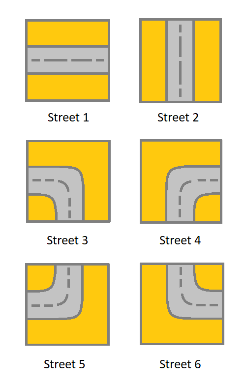
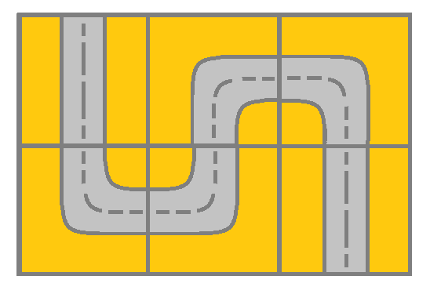
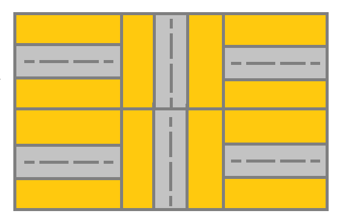

| Category | Difficulty | Likes | Dislikes |
|---|---|---|---|
| Algorithms | Medium | 874 | 325 |
array | depth-first-search | breadth-first-search | union-find | matrix
robinhood
You are given an m x n grid. Each cell of grid represents a street. The street of grid[i][j] can be:
1 which means a street connecting the left cell and the right cell.2 which means a street connecting the upper cell and the lower cell.3 which means a street connecting the left cell and the lower cell.4 which means a street connecting the right cell and the lower cell.5 which means a street connecting the left cell and the upper cell.6 which means a street connecting the right cell and the upper cell.
You will initially start at the street of the upper-left cell (0, 0). A valid path in the grid is a path that starts from the upper left cell (0, 0) and ends at the bottom-right cell (m - 1, n - 1). The path should only follow the streets.
Notice that you are not allowed to change any street.
Return true if there is a valid path in the grid or false otherwise.
Example 1:

Input: grid = [[2,4,3],[6,5,2]]
Output: true
Explanation: As shown you can start at cell (0, 0) and visit all the cells of the grid to reach (m - 1, n - 1).Example 2:

Input: grid = [[1,2,1],[1,2,1]]
Output: false
Explanation: As shown you the street at cell (0, 0) is not connected with any street of any other cell and you will get stuck at cell (0, 0)Example 3:
Input: grid = [[1,1,2]]
Output: false
Explanation: You will get stuck at cell (0, 1) and you cannot reach cell (0, 2).
Constraints:
m == grid.lengthn == grid[i].length1 <= m, n <= 3001 <= grid[i][j] <= 6